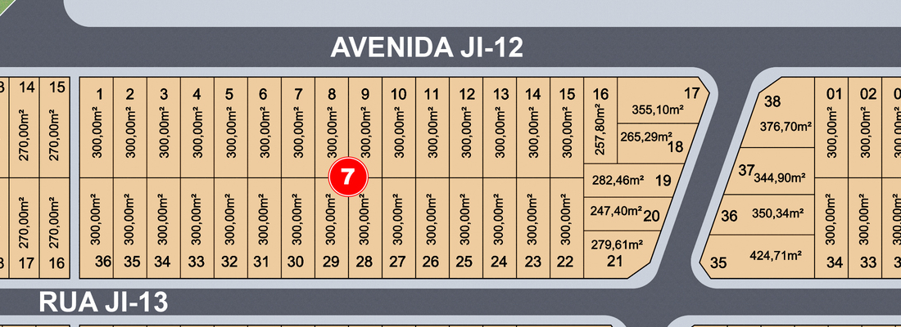

Toque no lote. Confira a ficha.
Primeiro recorte digitalizado da planta original: quadra 7. Somente os 13 lotes desta quadra identificados na tabela de novembro/2026 estão interativos.
Planta de referência, sem escala de levantamento topográfico.

Arraste a área da planta após ampliar. Os contornos foram traçados sobre os limites visíveis na imagem original. O destaque não substitui documento, medição ou confirmação de disponibilidade.
Selecione um lote
Toque na área azul da planta ou escolha no seletor acima.
O que este piloto valida
Clique na planta → identificação de quadra e lote → área e valores rastreados à tabela. Ainda não é o mapa completo do Ipês.
Perspectiva ilustrativa é a mesma imagem plana inclinada. Não é modelo volumétrico 3D e não representa relevo, orientação solar, dimensões em campo ou construções.
Fontes
Implantação original Ipês 1ª e 2ª etapas ↗
Tabela original novembro/2026, página 1 ↗